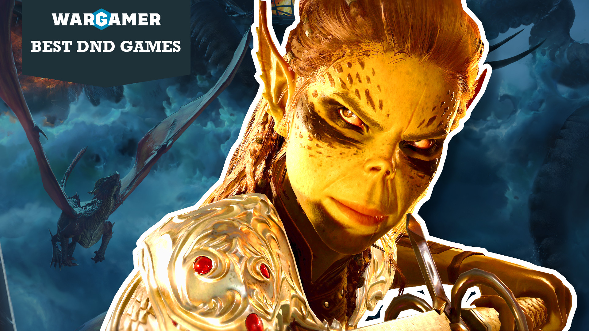
Best DnD games in 2026
Dungeons and Dragons's vivid, expansive fantasy universe has also produced a ton of kick ass DnD games. They're mainly CRPGs that recreate pen-and-paper play, but some come under unexpected genres too, from idle battlers to side-scrolling fighters. Team Wargamer's spent thousands of hours playing PC and console Dungeons and Dragons games, and these are our ultimate top picks.
If these games inspire you to try the tabletop original, stick around! We can help you roll up your first character with our DnD classes and DnD races guides. For now, though:
These are the best DnD games:
- Baldur's Gate 3
- Baldur's Gate
- Baldur's Gate 2
- Planescape: Torment
- Neverwinter Nights
- Icewind Dale
- Solasta: Crown of the Magister
- Neverwinter
- Dungeons & Dragons: Chronicles of Mystara
- Lords of Waterdeep
- Champions of Krynn
- Dungeons and Dragons Online
- Divinity: Original Sin 2
- Idle Champions of the Forgotten Realms
- Pillars of Eternity
- Pillars of Eternity 2: Deadfire
- Neverwinter Nights 2 Enhanced Edition
- Talespire
- Demeo
- Upcoming DnD games
1. Baldur's Gate 3
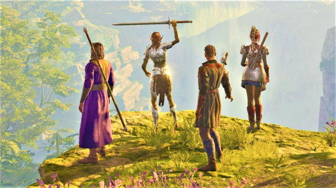
| Released | 2023 |
| Platforms | PC, PS5, Xbox X/Series S |
| Publisher | Larian Studios |
| Price | $59.99 (Steam) |
Baldur's Gate 3 is the most recent entry in the D&D games pantheon, and it's the best by far. Using its CRPG know-how from the Divinity series, developer Larian has seamlessly ported the tabletop rules of D&D 5th Edition into a shockingly detailed, malleable fantasy world that took six years of intensive development to bring to life.
The result is an enormous, immersive adventure that offers more creative customization options than you can throw a Fireball at. The varied classes, combined with dynamic environments and compelling encounters, mean we keep coming back to its world, even after hundreds of hours. It helps that the narrative writing - and the performances of the companions you travel with - are absolutely phenomenal.
No game is perfect; BG3's late-game areas are less exciting to play than the first acts, and newcomers to the CRPG genre might find that there's not enough hand-holding in the tutorial. But these shortcomings are small beans compared to the nigh-on miraculous achievement Baldur's Gate 3, as a whole, represents.
More than any other game yet made, it mimics the depth, authenticity, extreme interactivity, and feeling of imaginative freedom that is D&D's secret sauce. From micro-managing individual fights to charting your course through its colossal branching storylines, you get to make endless choices here, and they all matter. If you only play one D&D videogame, make it Baldur's Gate 3.
Read our Baldur's Gate 3 review.
2. Baldur's Gate
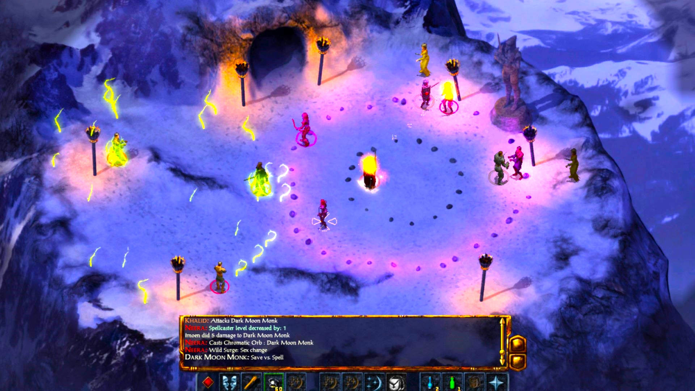
| Released | 1998 |
| Platforms | PC, Switch, Xbox One, PS4 |
| Publisher | BioWare / Black Isle |
| Price | $19.99 (Steam) |
Baldur's Gate wasn't the first Dungeons and Dragons videogame, but for many, it's the first that comes to mind. A ground-breaking RPG from then-minor studio BioWare, BG1 hit the scene with a compelling story, an open world ripe for exploring, and complex systems of skills and combat designed to suck in strategic minds. Even after 25 years, this trailblazer (mostly) holds up.
Playing as an orphan with a mysterious past, you're free to roam the fertile fantasy lands of the Sword Coast before approaching the titular city of Baldur's Gate. Along the way, you'll pick up a cast of colorful traveling companions, lend aid to various communities, and figure out what kind of hero you really are. As far as story-driven RPGs with customizable character classes go, this is the template.
While good writing never tarnishes, there are plenty of places in Baldur's Gate where things start to look rusty. It lacks any real tutorial, has plenty of antiquated D&D mechanics working behind the scenes, and you can freely wander into the map's most dangerous zones at any time. Playing Baldur's Gate is rewarding, but figuring out how to play can be a ruthless uphill struggle for newcomers.
3. Baldur's Gate 2
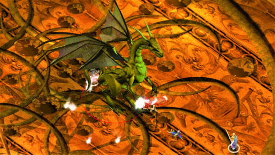
| Released | 2000 |
| Platforms | PC, Switch, Xbox One, PS4 |
| Publisher | BioWare / Black Isle |
| Price | $19.99 (Steam) |
Baldur's Gate 2 is a worthy successor to the CRPG series' debut, offering even more in-depth storytelling, complex combat, and adventuring to sate your D&D-loving stomach. The 24-year-old game is dense and difficult to understand for newcomers, but returning veterans (and novices who don't mind reading a lot of online tutorials) will find a treasure trove of classic RPG goodness.
You're playing the same character from the original Baldur's Gate, and you're traveling with many familiar faces. Only now you're significantly more powerful and must go toe-to-toe with a dastardly mage called Irenicus. You learned a lot from your original adventures on the Sword Coast, but now you're in the land of Amn, and your new enemies pose just as much of a threat.
With so much content packed into a reasonably small game, plus an army of nuanced companions to travel with, there's enough here to justify multiple playthroughs. Before Baldur's Gate 3 hit the scene, Baldur's Gate 2 was at the peak of Dungeons and Dragons videogames.
4. Planescape: Torment
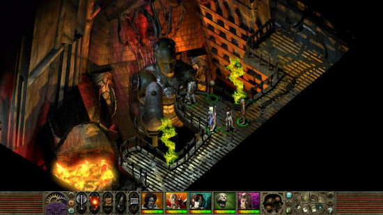
| Released | 1999 |
| Platforms | PC, Switch, Xbox One, PS4 |
| Publisher | Black Isle Studios / Interplay |
| Price | $19.99 (Steam) |
Planescape: Torment is widely considered one of the best CRPGs of all time - and many would call it one of the greatest videogames of all time. You don't get that kind of reputation for nothing.
This 1999 RPG uses the same AD&D system as the first two Baldur's Gate games and the same isometric perspective over pre-rendered backgrounds. It also sets the scene using one of Dungeons and Dragons' most original locations - Sigil.
Sigil is a dark, bizarre place ruled over by the enigmatic Lady of Pain, built inside a torus at the top of an infinitely tall spire at the center of the multiverse. Sigil is the city of doors, an untold myriad of portals connecting it to every plane, demiplane, and oddball corner of the multiverse. This is the Planescape setting, a place where anything is possible and belief shapes reality.
The 'Torment' comes from your player character, the Nameless One. You awaken on a slab in Sigil's great Mortuary with no memory of your past life - or lives, as it turns out. You're an immortal, and your quest is profoundly personal - you want to know who you are, and what the mysterious power is that's hunting you…
What follows is the most philosophical, thoughtful writing in any D&D game, with many of the best supporting characters. Yes, the UI feels very '90s, and the combat system is still complex and obscure, which raises the barrier to entry for newcomers. But it's worth pushing through - there's literally no RPG quite like Planescape: Torment.
5. Neverwinter Nights
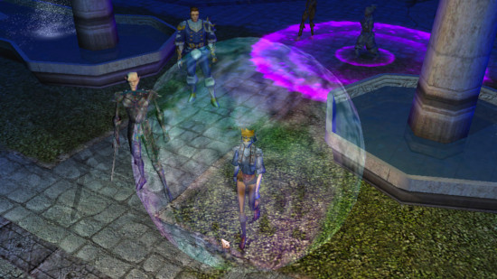
| Released | 2002 |
| Platforms | PC, Switch, Xbox One, PS4 |
| Publisher | BioWare and Obsidian / Atari |
| Price | $19.99 (Steam) |
We can understand why 2002's Neverwinter Nights doesn't have the same fame and nostalgia factor as the original Baldur's Gate games it builds on. Swapping the originals' distinctive, static isometric graphics for full 3D and a rotatable camera was a bold and expensive move that honestly takes more from the game in atmosphere than it adds in technical impressiveness.
For modern gamers, NWN's low-poly characters and bland, blocky environments feel like a clumsy prototype for modern top-down adventure games, where BG2 represents the polished pinnacle of an older graphical era. But somebody has to be the first to do it, and there's no doubt that without NWN there would be no BG3.
Not that NWN's base campaign is exactly revolutionary - each of its three acts (starting in the city of Neverwinter) has the same structure, a selection of largely self-contained zones with a variety of fairly generic quests (with a few standouts). But its two official expansions, Shadows of Undrentide and Hordes of the Underdark are both massive and incredibly well-written and packed with incredible ideas.
NWN's multiplayer was nothing short of revolutionary - experimenting on the edges of the then-nascent MMO genre by allowing up to 64 players in a server, with dynamic multiplayer versions of the DLC 'modules'; drop-in/drop-out play; a DM client that let one player control the monsters; and to this day some multiplayer servers are still running.
Critically for NWN's legacy and longevity, it included a modding toolset to build your own quests and campaigns. That client is so easy to use that there is an inexhaustible supply of fan-made NWN modules. The best and most popular even got formally published as "premium modules", and these really are of the same quality as many official D&D games.
NWN looks dated, and it's got rough edges - but it's a must-play for D&D aficionados. Beamdog's 2018 Enhanced Edition re-release modernized a lot of features and future-proofed the backend, so you can still jump on today. And you should.
6. Icewind Dale and Icewind Dale II
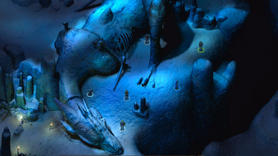
| Released | 2000 / 2002 |
| Platforms | PC, Switch, Xbox One, PS4 |
| Publisher | Black Isle Studios / Interplay |
| Price | Enhanced edition: $19.99 (Steam) Icewind Dale II: $9.99 (GOG) |
If you go looking for great D&D games from the turn of the millennium that aren't Baldur's Gate, you'll probably find Planescape: Torment first, and that's good, because it's magnificent. But the original Baldur's Gates had another, far less celebrated cousin that's also well worth your time: Icewind Dale.
Based on the same AD&D (2nd edition) rules and glorious isometric graphics engine as BG2, Icewind Dale tells another story in the Forgotten Realms, but it's a different experience entirely. We leave the big city behind in favor of the world's frozen North, and the Spine of the World mountains - and, instead of recruiting a range of pre-written, voiced companions, we create our own full party from scratch, with a lot more focus on crunchy, challenging combat and dungeon crawling.
The 2002 sequel, Icewind Dale 2, evolves even further, adopting the 3rd edition rules used in Neverwinter Nights to significantly expand your character creation and build options, as well as improved conversation mechanics and a more expansive world - but don't worry, the punishing tactical combat remains front and center. For fans who love crafting character builds and solving tough encounters, the Icewind Dales are still essential D&D games, more than 20 years later (especially as you can now get Beamdog's Enhanced Editions, visually remastered with the DLC rolled in).
7. Solasta: Crown of the Magister
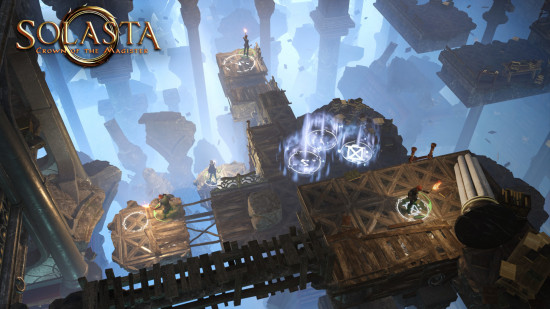
| Released | 2021 |
| Platforms | PC, Xbox One, Xbox Series X/Series S, PS5 |
| Publisher | Tactical Adventures |
| Price | $29.99 (Steam) |
Though it's not an officially licensed Dungeons and Dragons game, Solasta: Crown of the Magister still makes this list thanks to its turn-based combat system. It uses an incredibly faithful representation of the 5e ruleset, using the 'system reference document' that D&D publisher Wizards of the Coast has released into the Creative Commons.
Things like Mind Flayer and other creatures unique to the official D&D settings aren't free to use, so don't expect to find them here. But Solasta does a better job of replicating the D&D 5e rules than any other title on this list, including Baldur's Gate 3.
And unless your DM has access to a lot of miniatures and some incredible scenery, it's likely to offer better battles than your tabletop games. No, you can't improvise quite as freely with environmental details as you can at a tabletop session, but Solasta is packed with well-considered combat encounters in challenging arenas that will force you to wring every last advantage from your ability set.
While Solasta stumbles a little on the story front, let down by mediocre writing and subpar voice acting, it's propped up by a dedicated modding community, with almost 400 fan-made campaigns and modules on the Steam Workshop, not to mention the official DLC. It's also playable as a four-player co-op, so if you and your remote friends want to play together without a DM, Solasta is an incredible option!
8. Neverwinter
| Released | 2013 |
| Platforms | PC, Xbox One, PS4 |
| Publisher | Cryptic Studios / Arc Games |
| Price | F2P |
Neverwinter is a mid-complexity MMORPG that lets you explore all manner of classic settings. Things may have started in the once-great city of Neverwinter, but regular new modules and events have taken gameplay to Avernus, Ravenloft, the Underdark, and beyond.
The game still has an active player base in 2026 - a recent module added skyfaring pirates. Basically, you can still jump into this decade-old game with relative ease.
It's free to start playing Neverwinter (though you'll be grinding for a long time if you want the best in-game items). Once you've chosen a class and formed your adventuring party (with real or computerized companions), you can get stuck into some dungeon-crawling, combat-heavy quests. The combat that fills much of your time in these dungeons is approachable yet entertaining.
Experienced MMO fans might not be overly impressed by Neverwinter's low complexity and level caps. But if you love the Forgotten Realms setting and enjoy a story-driven online multiplayer game, there's plenty to love.
9. Baldur's Gate: Dark Alliance 2
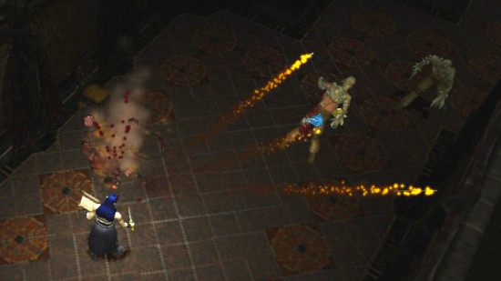
| Released | 2004 |
| Platforms | PC, Switch, PS4, PS5, Xbox One, and Xbox Series X/S |
| Publisher | Black Isle Studios / Interplay |
| Price | $39.99 (Steam) |
Directly inspired by Blizzard's Diablo, the original 2001 Dark Alliance was the first major attempt to shift Dungeons and Dragons from its home turf as a challenging, tactical, CRPG into the new Action RPG genre - ditching the carefully strategized battles and long-written conversations in favor of fast-moving, hack and slash dungeon diving, with far simpler character progression and controls.
2004's Baldur's Gate: Dark Alliance 2 perfected that formula for the PlayStation 2, expanding from three playable character/class presets to five; making the campaign a bit more flexible by allowing main quests to be approached in different orders; a weapon crafting system, and more. It's not as good as Diablo 2 (the best ARPG that ever has or ever will be made) but it was extremely playable in its time, especially via the addictive 2-player, shared screen coop mode.
Dark Alliance 2 was re-released for PC in 2021, and the port is just fine, so long as you're not expecting any remastering or prettification - it's still a 2004 game with 2004 graphics. If you're a fan of both Dungeons and Dragons and Diablo, you can have a lot of fun with Dark Alliance 2 without having to use your brain - something we all need once in a while. Just don't confuse it with the highly disappointing 2021 ARPG D&D Dark Alliance, a game so bad it's shutting down for good in February 2025.
Read our Baldur's Gate: Dark Alliance 2 review.
10. Dungeons & Dragons: Chronicles of Mystara
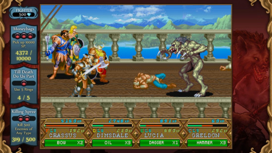
| Released | 2013 |
| Platforms | PC, PS3, Xbox 360 |
| Publisher | Iron Galaxy Studios / Capcom |
| Price | $14.99 (Steam) |
As a button-mashing, side-scrolling beat-em-up, DnD: Chronicles of Mystara is an oddity amidst all these CRPGs and their dense worlds of tactical combat. Originally released in the 1990s as a pair of Capcom arcade games, this retro title was dredged up and re-released in 2013. Some may argue that nostalgia is the main reason to try this re-vamped D&D game, but we think it has plenty of merit for newcomers, too.
Chronicles of Mystara is actually a compendium of two games: Tower of Doom and Shadows over Mystara. They're very similar, but the latter is pretty much a straight upgrade, offering more variety in class options and special moves. While a single playthrough is very quick, the game is rightly praised for its branching paths, offering different enemies to fight and magic items to collect, which will keep you coming back.
Best played with friends, Chronicles of Mystara lets you tackle a range of monsters in classic beat-em-up style. If you've ever wanted to mash buttons and stab a beholder in the face, this is the game for you. It also gets bonus points for being a great port with online multiplayer, leaderboards, and plenty of graphics options.
11. Lords of Waterdeep
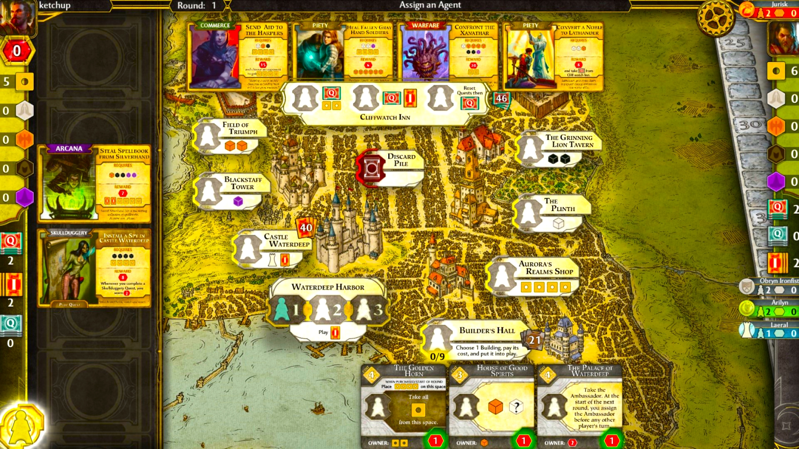
| Released | 2017 |
| Platforms | PC |
| Publisher | Playdek Inc. / Wizards of the Coast |
| Price | $9.99 (Steam) |
If you want to play something that's truly faithful to the tabletop experience, you might want to pick up Lords of Waterdeep. Yes, this really is just a digital port of the classic board game of the same name - but sometimes that's the perfect kind of videogame to scratch the D&D itch.
Lords of Waterdeep places you in the role of one of the rulers of the famous D&D city Waterdeep. To win, you'll need to earn points by assigning your underlings to various tasks - whether that be completing quests or constructing buildings. Manage your people well enough, and your wealth and control over Waterdeep will grow.
There's plenty of engaging strategy here, and the turn-based gameplay that's been translated from the board game offers a slower, more thoughtful videogame experience compared with some of the real-time alternatives in this list. It's also perfectly playable for people who've never picked up a heavy strategy board game, as its strategic gameplay is ultra-approachable and easy to pick up.
12. Champions of Krynn
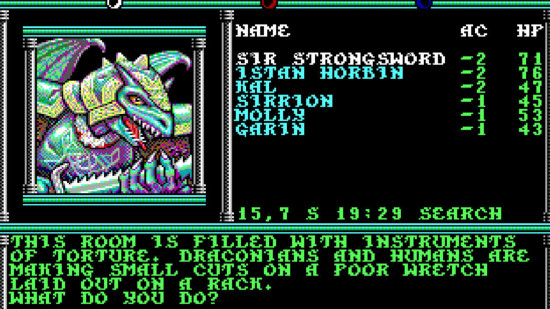
| Released | 1990 |
| Platforms | PC |
| Publisher | Strategic Simulations |
| Price | $9.99 (Steam) |
Back in the '80s and '90s, a company called Strategic Simulations was publishing all manner of licensed D&D roleplaying games for PC. Many of these 'Gold Box' games featured party-based tactical combat and dungeon exploration that mirrored the D&D edition of the time. The text and graphics in the games themselves were kept minimal, so there are fewer opportunities for roleplay than in a series like Baldur's Gate.
Hardcore Gold Box fans claim that Pool of Radiance and Curse of the Azure Bonds are the pinnacle of the series. However, we think Champions of Krynn is the best place for newcomers to start. It has an approachable linear story, a slightly less intimidating difficulty curve to surmount, and an intriguing world-saving plot. All this helps reduce the barrier to entry that comes with playing decades-old CRPGs.
Champions of Krynn takes place in the Dragonlance setting, so you'll get a glimpse of a unique, compelling world that's rarely explored in other D&D games. After the War of the Lance ends, the forces of evil decide they've not been defeated just yet - and they try once more to get Queen Takhisis (Tiamat, in other settings) to take over the land. Your heroic party must do their part to stop this from happening.
If you're already a fan of the Dragonlance novels, you'll have a ball wandering a world you know and love. You might need to do a bit of homework if you're new to the setting as well as the mechanics, though - there's no hand-holding in '90s games, after all.
You can pick up Champions of Krynn - and its two sequels - as part of the 'Dungeons & Dragons: Krynn Series' bundle on Steam or GOG for less than the price of lunch. This updated version of the Gold Box games comes with plenty of quality-of-life tweaks that make getting into the classics even easier.
13. Dungeons and Dragons Online
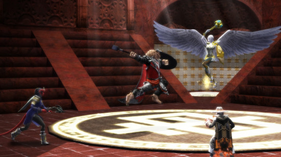
| Released | 2006 |
| Platforms | PC |
| Publisher | Turbine Inc. |
| Price | F2P |
Before Neverwinter, there was Dungeons and Dragons Online. This MMORPG is almost 20 years old, and it certainly looks its age. However, those dated graphics hide a wealth of unique settings and customizable character builds to explore. With gear that actually matters and a reincarnation mechanic that lets you bring characters back stronger, there's enough replayability here to span several decades.
It helps that there's a significant amount of content to play without having to pay anything. And, for those who are willing to invest in this free-to-play title, the developer is still bringing out adventure modules. These engaging quest storylines span all sorts of settings, from Eberron to the Feywild.
A lot of the old guard from Dungeons and Dragons Online will say that the game's quality has gone downhill since its early days. However, if you ask them whether to start playing, many will still say an emphatic 'yes'.
14. Divinity: Original Sin 2
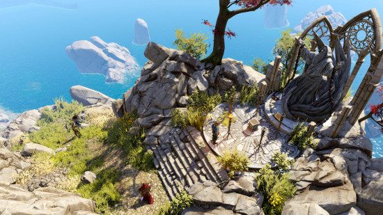
| Released | 2016 |
| Platforms | PC, PS4, Xbox One, Switch |
| Publisher | Larian Studios |
| Price | $44.99 (Steam) |
While it's not a licensed D&D game, Divinity: Original Sin 2 will now always be thought of as the prototype for Baldur's Gate 3. It was the foundation stone on which Larian built BG3, and the games share most of the same DNA - from character creation to UI to sense of humor. If you've played Baldur's Gate 3 to death and want to experience similar gameplay, here's how you avoid waiting around for ten years.
Its turn-based tactical combat manages to make viciously deadly battles more manageable and less mind-melting than older CRPGs, without compromising the puzzle-like challenge at their heart. Meanwhile, its vivid, original fantasy setting of Rivellon strikes a surprisingly effective balance between bouncy, Fable-esque light-heartedness and some pretty gruesome, heavy themes. It's a compelling combo that'll keep you immersed through at least 100 hours of adventuring.
From one perspective, DOS2 in 2026 is just BG3 but not as good - but if that's the way you think, you'll miss out on a spectacular RPG that's as full of grin-inducing characters and top-notch writing as it is satisfying, rock-hard battles that'll test your brain.
15. Idle Champions of the Forgotten Realms
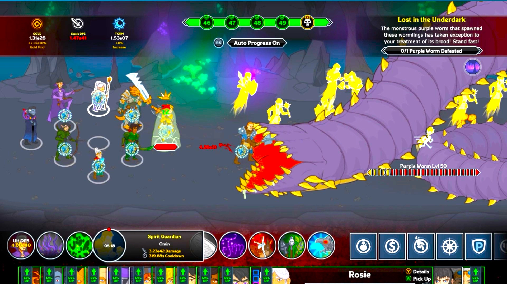
| Released | 2020 |
| Platforms | PC, PS4, Xbox One, Switch |
| Publisher | Codename Entertainment |
| Price | F2P |
Looking for a way to enjoy D&D that's a little less rules-heavy? Idle Champions of the Forgotten Realms might be the game for you. This is a free-to-play strategy management game where you collect various adventurers with different abilities, form a party, and send them off to battle bosses in various settings in your stead. There's loot and level-ups in it for you, too.
The phrase 'idle' in the title comes from the idea of an 'idle game' or 'incremental game' - these are games that 'play themselves' to a certain degree. Like a simulation game, the strategy comes from managing a resource (i.e. your adventurers and their abilities) rather than engaging in an activity like combat. We did say this was one of the less intense D&D videogames.
If you're a big fan of D&D actual plays, other videogames, and the general Dungeons and Dragons IP, there's a small army of iconic characters you'll enjoy collecting. However, as with many mobile-friendly games, the true final boss is all the microtransactions you'll fend off on your free-to-play adventures.
16. Pillars of Eternity
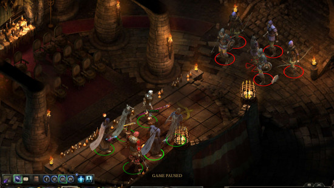
| Released | 2015 |
| Platforms | PC, PS4, Xbox One, Switch |
| Publisher | Obsidian Entertainment |
| Price | $39.99 (Steam) |
Pillars of Eternity isn't an official D&D game at all, and it doesn't even use a variant of the D&D rules set. So why is it on this list? Pedigree. Pillars of Eternity was created by Obsidian Entertainment, the team that created the original Baldur's Gate games, as an explicit spiritual successor.
For a long, dark time in the '00s and early '10s, big publishers wouldn't touch isometric RPGs, and fans of the genre had to go to indie outlets like Spiderweb Software to get their fix. Obsidian wanted to make a proper Baldur's Gate-alike, so in 2012, they took a chance on a new-fangled crowdfunding platform called 'Kickstarter' to ask customers to bankroll the development of the game.
The Kickstarter was wildly successful, giving the team the runway they needed to create a classic, old-school isometric RPG. Pillars of Eternity has an original gameplay engine built from the ground up to avoid the frustrations of AD&D, and a unique world that makes the D&D tropes that souls and reincarnation are real into serious parts of the world. It feels like that classic D&D gameplay you remember.
It's been available on Xbox Game Pass for years. If you want to know more about why it's so compelling, check this write-up that Tim Linward gave it when he should have been testing the Baldur's Gate 3 beta build.
17. Pillars of Eternity II: Deadfire
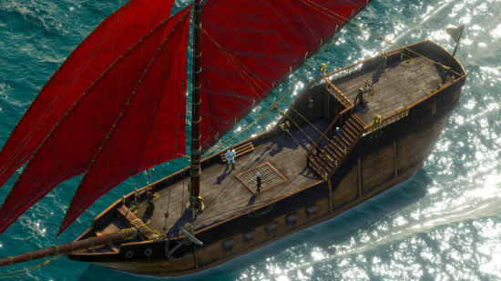
| Released | 2018 |
| Platforms | PC, PS4, Xbox One |
| Publisher | Obsidian Entertainment |
| Price | $39.99 (Steam) |
If we're including the original PoE, it'd be churlish of us not to celebrate its swashbuckling sequel, Pillars of Eternity 2: Deadfire - another wildly successful, story driven CRPG by Obsidian, built on the same firm foundations as a spiritual successor to the old Black Isle AD&D classics.
There's a grand tradition of D&D campaigns that do 'the pirate thing', placing your party's home base on your very own seafaring vessel and adventuring over sea and land, with shanties, seadogs, cannon battles, and boarding actions aplenty - the 2019 5th edition module Ghosts of Saltmarsh being the most recent example.
And what they do for tabletop D&D, Deadfire does for the world of D&D videogaming. Where PoE1 was a relatively linear, BG1-style progression from region to region, Deadfire makes you captain of your own ship, on a more open-ended quest through the whole of the Deadfire archipelago, exploring freely between islands and jungles, chasing down a new-born god.
Along the way, there's a host of side stories, random encounters, Obsidian's usual standard of fantastically written crew members and NPCs to get to know, and loads of ship battling that'll have you just as keen to be upgrading your vessel's sails and cannon as leveling up your characters' skills. If you liked the first Pillars of Eternity, play Deadfire. If you like piratical D&D adventures, play Deadfire. You know what, just to be safe: play Deadfire. It rocks.
18. Neverwinter Nights 2: Enhanced Edition
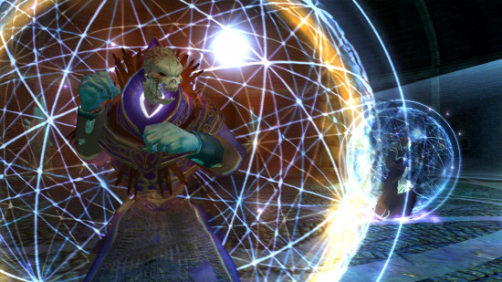
| Released | 2025 |
| Platforms | PC, Switch, PS5, Xbox X/Series S |
| Publisher | Obsidian |
| Price | $29.99 (Steam) |
This is one of the most exciting releases of recent years one for anyone who got into PC RPG gaming in the mid-aughts: the 2025 remastered version of Obsidian's Neverwinter Nights 2!
This is a chunky package, including all three of the original expansions: Mask of the Betrayer; Storm of Zehir; and Mysteries of Westgate. Developer Aspyr says has upscaled the textures from the 2006 original, and - most excitingly - the infamously janky camera system has been replaced with one that actually works!
Neverwinter Nights 2 has a disproportionately small legacy compared to its forebear. The development tools for creating community content are very powerful - but unfortunately much harder to use than the tools in NN1, resulting in a much, much smaller modding scene. Where the original Neverwinter Nights has an ocean of fanmade content, here it's more of a puddle.
But the same changes that made the game harder for modders to use meant the developers had a whole lot more oomph to play with. The game has some of the strongest 3D campaigns that Obsidian ever made, particularly Mask of the Betrayer, an epic level quest that puts you into a cosmic conflict with the god of the dead (what else do you expect from a D&D campaign?).
19. TaleSpire
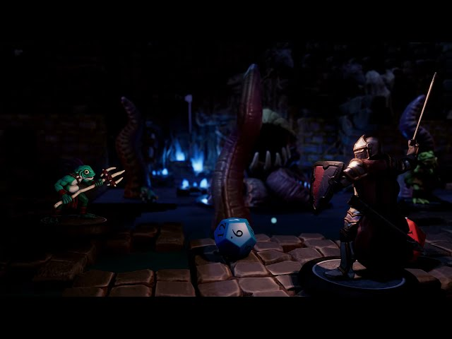
| Released | 2021 |
| Platforms | PC |
| Publisher | Bouncyrock Entertainment |
| Price | $24.99 (Steam) |
TaleSpire should really be on our guide to virtual tabletops, since - aside from being sold on Steam and featuring full 3D environments - it's a framework for playing games in rather than a game itself. Like other VTTs, TaleSpire allows friends from around the world to log in to a shared virtual table to play games of D&D - it's just that this one looks absolutely stunning.
Like other VTTs, TaleSpire doesn't actually have an engine for running the D&D rules, but it lets you move minis and roll virtual dice so a human GM can keep the game going. The main selling point are the gorgeous 3D level building tools - the only system that comes close is Wizards of the Coast's Project Sigil, and that's been shuttered.
Unlike Sigil, TaleSpire has a comprehensible monetization method - which could be the sticking point for some people. There's no subscription, but everyone who logs in either needs to own a copy of the game, or the host needs to purchase additional 'Seats' to let other users join with the free Guest Edition. That's a bigger up-front investment than any other VTT.
20. Demeo x Dungeons & Dragons: Battlemarked
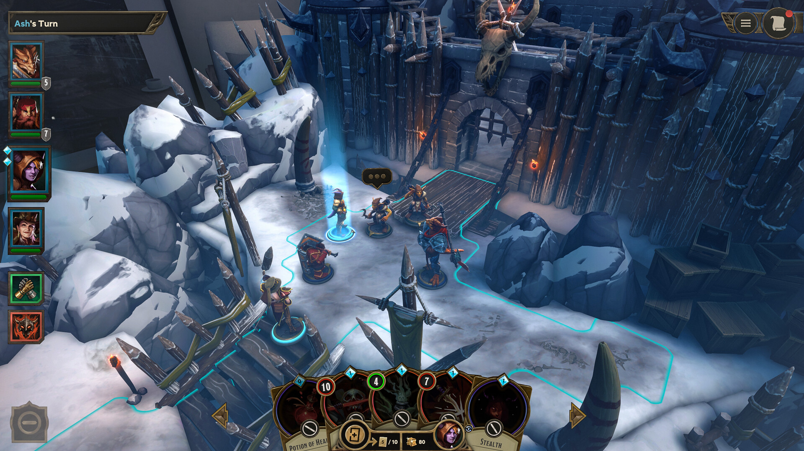
| Released | 2025 |
| Platforms | PC, VR, Meta |
| Publisher | Resolution Games |
| Price | $29.99 (Steam) |
Demeo x Dungeons & Dragons: Battlemarked is either one of the most delightful digital representations of D&D that exists, or an incredibly cumbersome and simplistic tactics RPG - and it all depends on whether or not you're playing it in VR. The original Demeo, and this officially licensed spin-off, are presented as a virtual tabletop game - rather than animated heroes, your characters are static playing pieces that you pick up and drop just as if you were playing with real miniatures.
If you're playing in VR this is incredibly charming. You get all the fun of interacting with a board game, with the benefit of AI to control the opposition, and battles that take place on a board that even the most lavish dungeon master would never be able to build.
But if you're not playing in VR those same features are just frustrating. Everything from the control scheme to the camera control is designed for VR first, and it just doesn't make the leap. Still, if you have a headset - and particularly if you have some friends with headsets you can play multiplayer with over the internet - then this is an absolute delight.
Upcoming DnD games
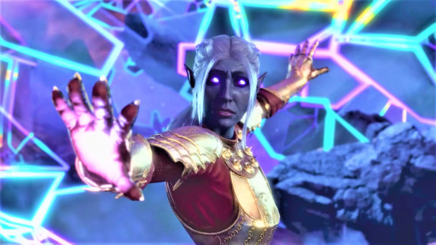
After the success of Baldur's Gate 3, Hasbro has wasted no time in arranging the licenses for a slew of upcoming DnD games. Here's everything we know about the future of Dungeons and Dragons videogames:
Solasta 2
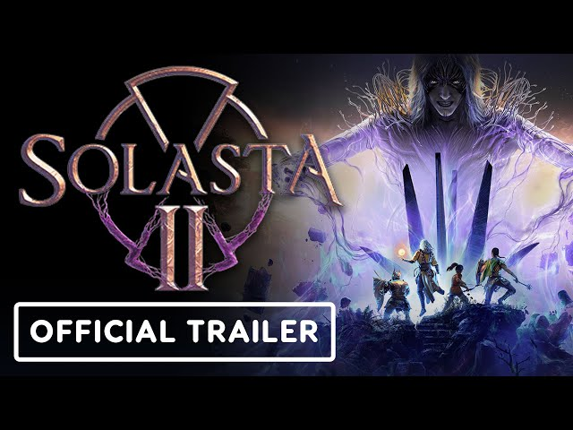
Tactical Adventures' Solasta 2 may be an 'unofficial' D&D game in that it's not being made by Wizards of the Coast - but don't be fooled. Based on the open source SRD 5.2 rules and drowned in magic, fantasy, and sumptuous oversaturated CRPG graphics, this is a Dungeons & Dragons PC game through and through.
If the gameplay and graphics weren't enough of a clue that this game wants to fill the (probably long) gap between Baldur's Gate 3 and its fabled sequel, it's got two of BG3's most loved voice actors in it: Amelia Tyler (the narrator) and Devora Wilde (Lae'zel).
Solasta II hits early access on Thursday, March 12, 2026. Watch out for our first impressions and more coverage on Wargamer very soon!
Warlock
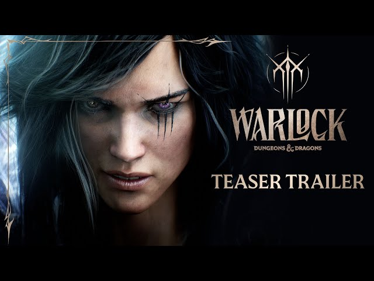
A teaser trailer for this upcoming game from Dark Alliance creator Invoke Studios was released at the 2025 Game Awards. It's cinematics only so far, showing a warlock type positively overflowing with angst and brooding.
We don't know when this game will come out, but a gameplay reveal has been promised in Summer 2026.
Baldur's Gate 4
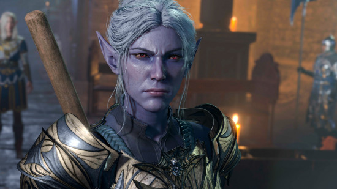
D&D's top executives have confirmed that Baldur's Gate 4 is absolutely, definitely happening. Really, they'd be silly not to make it after the success of BG3. However, it won't be made by Larian. In fact, we don't know who will develop it yet. We also have no idea how long it'll take to produce. But it's coming!
Untitled Giant Skull game
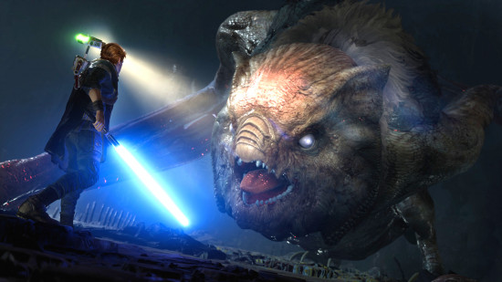
After directing both Star Wars Jedi games, Stig Asmussen went on to found the indie studio Giant Skull in 2024. This new studio has since confirmed that its working on a single-player action adventure game set in the world of Dungeons and Dragons. Details are sparse, and we certainly don't have a release date in our sights yet.
Untitled Gameloft game
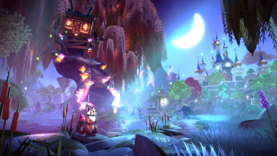
Gameloft's Montreal studio - the developers behind Animal-Crossing alike Disney Dreamlight Valley - are working on a co-op action game set in the Forgotten Realms. According to Gameloft's announcement in March 2024, it'll feature "unique cooperative gameplay built around an innovative hybrid of survival, life simulation and action RPG". We're getting distinctly cozy vibes, but there aren't any more concrete details just yet.
Unannounced games from Wizards of the Coast inc.
Hasbro announced on September 30, 2025 that it was opening yet another DnD videogame studio, confusingly titled 'Wizards of the Coast Inc.', and that it would be working on "new and ongoing projects for Dungeons and Dragons and digital games".
As yet, we've no idea what those are going to be, or whether Wizards, Inc. will turn out to be more of a support studio for others' releases. But, given this is the fifth internal videogame studio Hasbro has rigged up in the last few years, as part of its new digital first strategy, there's a fair chance the move signals even more D&D videogame titles on the way.
That's it for our top-tier recommendations on D&D videogames - though we're always game to try new ones that might deserve a spot on the list. If you spotted any unmissable titles we missed - or just want to have a chinwag about your favorite digital D&D adventures - come join the Wargamer Discord community and let us know!
Originally published on Wargamer.


Leave a Comment